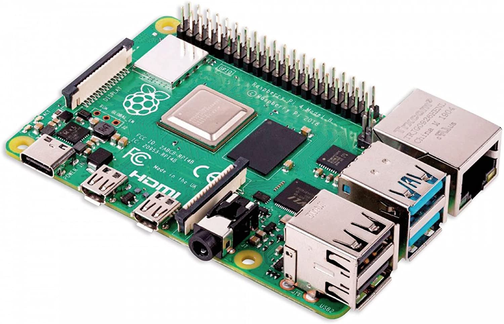

CycTrack
A integrated tracking system for bike trip
CycTrack delivers an excellent solution to the safety problem of traveling on bikes, and it is implemented based on a Raspberry Pi 4 and has three main functions that allows riders to receive real-time information such as weather, speed, coordinates, and their surroundings and to send emergency email to their default emergency contact. With CycTrack, rider's saftety can be efficiently enhanced.
It will be your guardian during a enjoyable cycling trip.
Motivation
CycTrack possesses important social value and marketing potential. In major cities such as New York City, bikes are one of the most common but dangerous ways of traveling for people. In 2018, there were a total of 18,718 bike accidents, 18,710 resulted in injury and 8 fata. In 2019, there were a total of 18,510 bike accidents, 18,494 resulted in injury and 16 fata. In 2020, there were a total of 12,450 bike accidents, 12,422 resulted in injury and 28 fata. By providing necessary real-time information, it will make it possible to enhance the safety of riding. If we use the phone to check information while riding bikes, there are too many distracting APPs, which is not convenient. Hence, causing higher risk of loss and damage. CycTrack allows riders to get important information without looking at their phones, which can efficiently reduce distractions. It could replace a bike phone mount with a multi-functional device specifically designed for bike traveling.
In addition, due to the lack of similar products, the demand of this product may increase in the future. From 2016 to 2019, the number of bikers in the U.S increased from 45.82 million to 48.88 million and is still growing. Therefore, there is a growing size of target customers.
System
In our project, we created two display pages. One is the main dashboard page, which shows the date, time, location, weather, and speed. Also, there is an emergency bottom. Another page presents the whole map around the rider's area. The marker on the map tracks the real-time location. We used the Adafruit Ultimate GPS module to collect data like time, latitude and longitude, and sent to the map server to update the location on the map, meanwhile updating the real-time information that shows on the dashboard. When an emergency happens, pushing the button will send an email message with essential information to the rider's default emergency contact so that the riders can get proper and immediate help. Due to budget limitation, we used sending emergency email messages instead of emergency text messages. However, it is feasible to send text messages directly to 911.
Architecture
Technical Components
Hardware:
Adafruit TFT Touchscreen, Adafruit Ultimate GPS, Raspberry pi 4, four buttons, wires, battery
Adafruit TFT Touchscreen

Adafruit Ultimate GPS
Raspberry pi
Software:
-Python: implement different functions to the display module and Raspberry pi.
-Flask: build a server to receive the requests from a GPS module.
-Email: used to send alarm messages for emergencies.
Prototype

There are two buttons. The top one is used to change the information page showing on the screen. The bottom one is used to send email message to the default contact when emergency happens.


References
[1]NYC Bicycle Safety Overview: Infrastructure and Camp; Crash stats, 2021, April 15, Retrieved December 8, 2021, from https://www.peoplepoweredmovement.org/nyc-bicycle-safety-overview-infrastructure-crash-stats/.
[2]David Lange, "Cycling-Statistics and Facts", December 8, 2021, from https://www.statista.com/topics/1686/cycling/#:~:text=Cycling%2C%20also%20known%20as%20biking,to%2047.5%20million%20in%202017.
[3]https://learn.adafruit.com/adafruit-3-5-color-320x480-tft-touchscreen-breakout/python-usage
[4]https://learn.adafruit.com/adafruit-ultimate-gps/circuitpython-python-uart-usage

Contact
Yuan Lu: yl4880@columbia.edu
Fangyu Hao: fh2440@columbia.edu
Xunqi Li: xl3128@columbia.edu
Columbia University Department of Electrical Engineering
Instructor: Professsor Xiaofan (Fred) Jiang